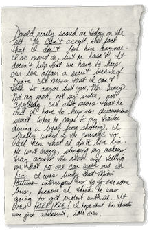
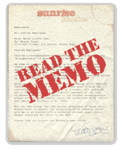
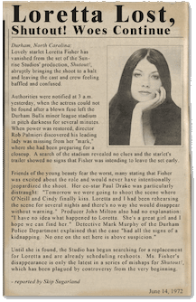
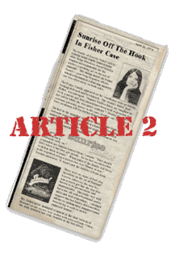

Few people know that Sunrise Studios spends about as much time covering up scandals as they do making movies. The 1970s were especially sordid, when nobody was "square" and everybody was in a love triangle or two. Everybody knows the stories of young women who arrived in Hollywood with dreams as big as their breasts, determined to do anything for a chance to be the next starlet. And of course, producers and directors at all the major studios were happy to exploit their naivete. But Sunrise was different: some of their women disappeared.
The first incident occured in 1970 on the set of Is Somebody There?. Beautiful young starlet Elaine Varsi had been cast in the role of Pam, a sexy cheerleader who is stalked by a killer in the woods. Strangely enough, Elaine disappeared during the first week of shooting and was never seen again.
 As an actress, lovely Elaine had caught the eyes of many Hollywood leading men, but her big break had really happened in the bedroom of Don Crosby, head of Sunrise Studios. While Elaine's life at the start of shooting the film seemed almost perfect, I have uncovered a diary entry that tells an entirely different story. Click below to read a caption from her journal- you'll find evidence of a scared, vulnerable and shaken young woman who feared for her life. More important, the entry provides credible evidence that Don Crosby could very well have been involved in the starlet's mysterious demise.
There were no leads on her whereabouts and no signs of any wrongdoing, but the Studio was quick to cover up the incident in the press. It's no surprise that Don Crosby took charge of the situation and gave strict orders to his employees not to talk to anyone about the case. Even worse, the young woman had only been missing two days before the studio replaced her with a new actress. Click here to check out an internal memo containing the Studio Chief's strict orders to keep silent.

An even more mysterious incident occured in 1972 on the set of the box-office disaster Shutout!, when another beautiful actress, Loretta Fisher,
vanished from the set in the middle of shooting her scene!. Click here to read about her bizarre vanishing act in an article from the
Hollywood Informer.
There were no suspects and no leads in the case, and Ms. Fisher was never seen or heard from again. Her family, however, was determined to hold Sunrise Studios responsible for their daughter's disappearance (and rightly so) and sued Sunrise. The case took one year to resolve but the sneaky Studio managed to escape the blame when their lawyer, Henry Loomis, found a legal loophole. Click here for the Hollywood Informer's report on the end of the trial.
Most interesting to note, however, is that Sunrise lawyer Henry Loomis parted ways with the Studio the very next day after the case was closed. Rumor has it he left Hollywood for good and set up his own private practice in a small Midwestern town: Woodsboro. Is there a connection between Loomis' arrival and the legacy of the ill-fated community that eventually spawned the Sunrise hit Stab Series? More on that later....